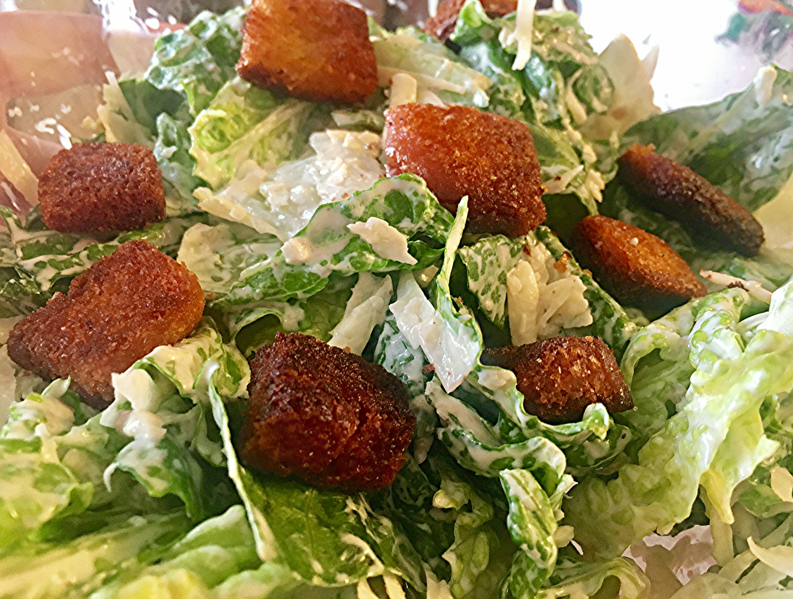

Caesar Salad Supreme

- prep:20 mins
- Cook:25 mins
- Total:35 mins
- Servings:6
Ingredients
- 6 cloves garlic, peeled, divided
- ¾ cup mayonnaise
- 5 anchovies anchovy fillets, minced
- 6 tablespoons grated Parmesan cheese, divided
- 1 teaspoon Worcestershire sauce
- 1 teaspoon Dijon mustard
- 1 tablespoon lemon juice, or more to taste
- salt to taste
- ground black pepper to taste
- ¼ cup olive oil
- 4 cups day-old bread, cubed
- 1 head romaine lettuce, torn into bite-size pieces